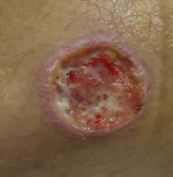

Bem-vindo ao Blog sobre Leishmaniose
Explore as páginas acima para aprender sobre essa doença, sua prevenção, tratamento e muito mais.
Aviso: A imagem abaixo contém conteúdo sensível (ferida causada por leishmaniose). Clique no botão para visualizar.
